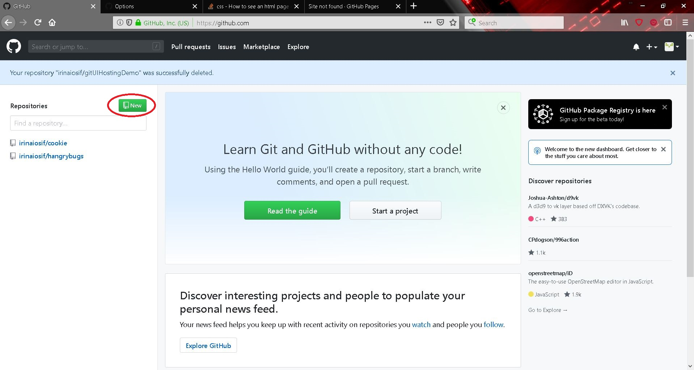
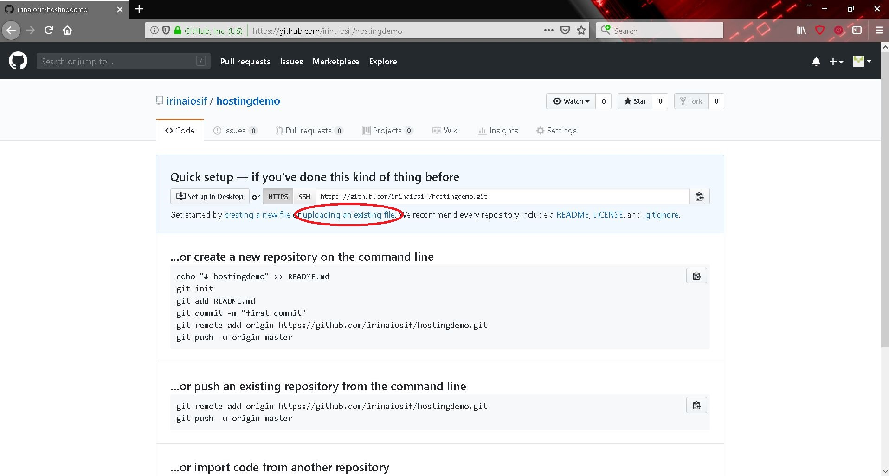
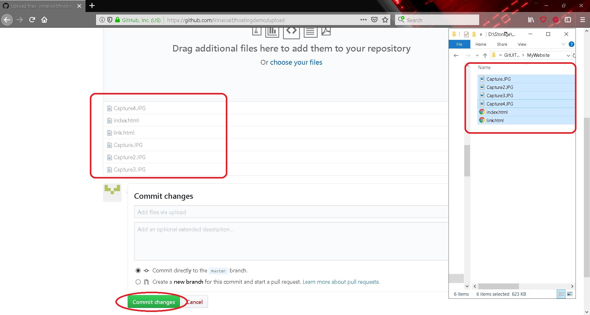
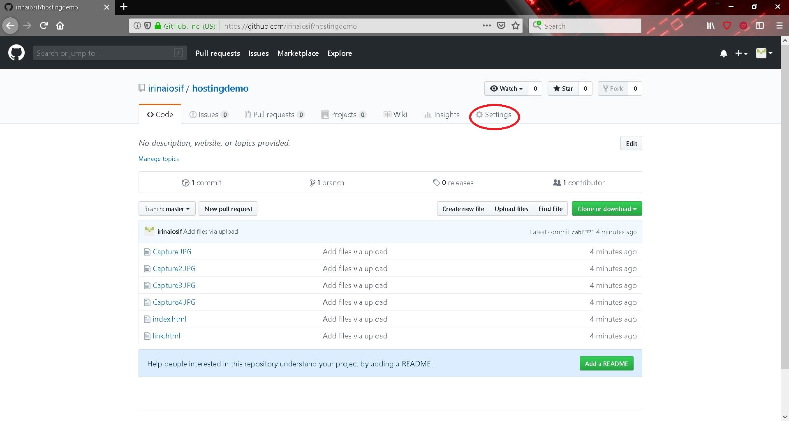
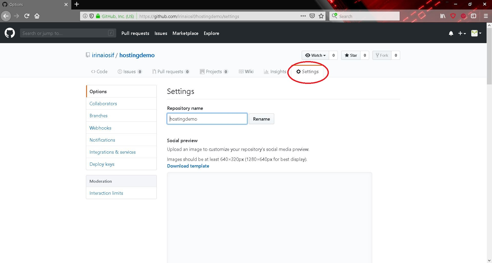

Probably the simplest way of publishing your website
In order to publish your static website* on Github* we assume you already have the following: a github account (made by visiting singing up on Github) and a website that is functional on your local machine.
After you login, you should be welcomed to this page:

Here you should find the option of creating a new repository* as described in the picture above.
Further on, you are invited to choose the name you will use for your website. This will be available for modifing. Leave the rest unchanged and submit:
After you are redirected to the next page, you should find a way to upload your files:

Drag and drop all the files referenced into your website. Make sure your main page is named "index.html". Github won't know what to render first unless you use this naming convention.
The successfully uploaded files will appear as uploaded. If you encounter any dialog regarding branches*, just make sure the master branch is selected. Then submit to commit changes.

This is how you should end up after your files are done being processed:

Now you should find the "Settings" tab and select it. Note that here you can also rename and delete your repository in case something went wrong.

Scroll down to Github Pages. In order to enable this feature so that you can visualize the website, you have to set the Github Page source of the repository as master branch (the branch where you have your html files).
Done! From now on, everyone should be able to view your webiste at the given link: